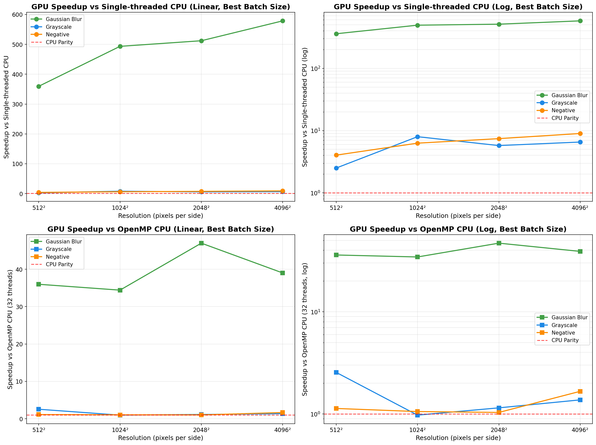
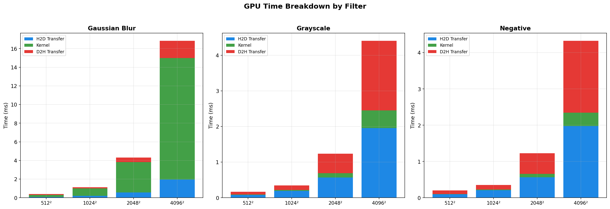
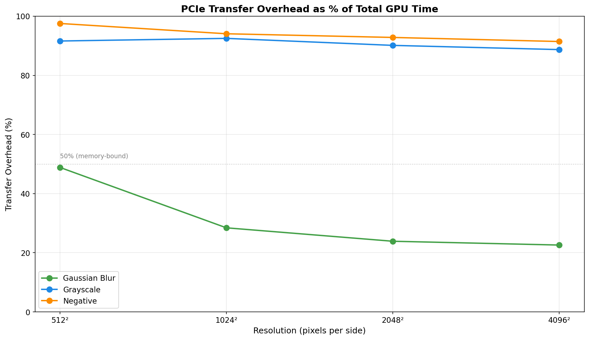
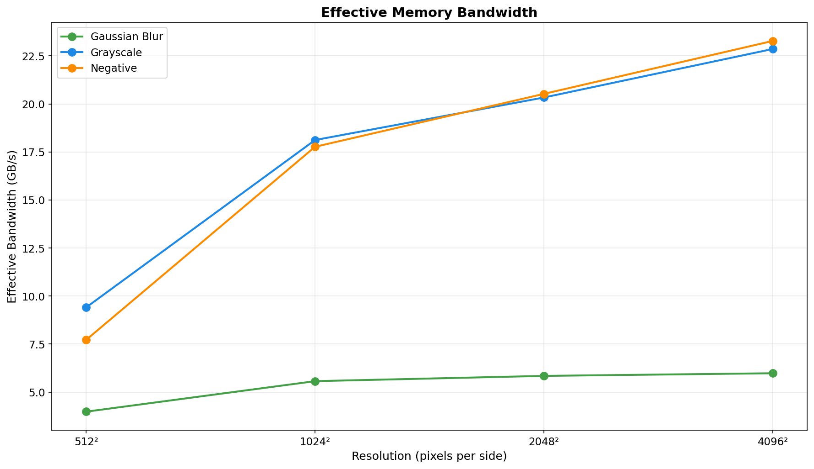
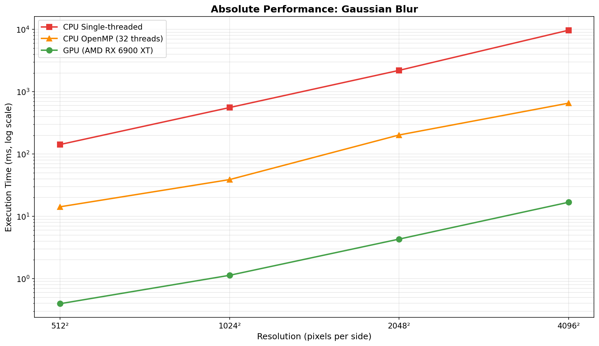
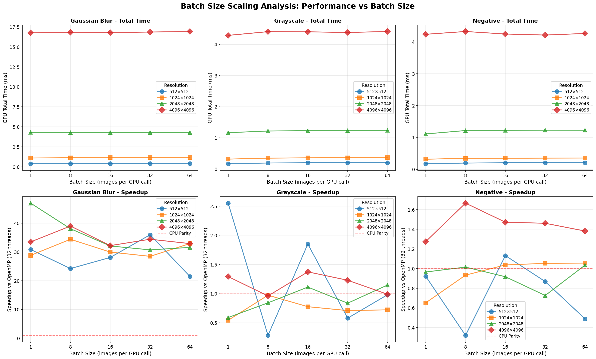

Executive Summary
Peak Speedup (vs Single-CPU)
582×
Gaussian Blur @ 4096²
Peak Speedup (vs OpenMP)
47×
Gaussian Blur @ 2048²
Avg Transfer Overhead
72%
of total GPU time
Test Configurations
60
3 filters × 4 resolutions
Performance Analysis

GPU Speedup vs CPU (Both Single-threaded and OpenMP) – Shows performance relative to single-threaded CPU
(top row, up to 582×) and OpenMP CPU with 32 threads (bottom row, up to 47×).
Gaussian blur achieves massive speedups due to compute-intensive nature, while simple filters are memory-bound.
{kind=link}

GPU Time Breakdown – Shows proportion of time spent in H2D transfer (blue),
kernel execution (green), and D2H transfer (red). Note how transfer overhead dominates for
simple filters but drops substantially for gaussian blur.
{kind=link}

PCIe Transfer Overhead – Percentage of total GPU time spent on memory transfers.
Simple filters are 89-98% transfer-dominated, while gaussian blur drops to ~22% at large resolutions.
{kind=link}

Effective Memory Bandwidth – Achieved bandwidth increases with image size as
transfer overhead amortizes. Peak bandwidth reaches ~23.9 GB/s for large images.
{kind=link}

Absolute Performance Comparison – Log-scale plot comparing single-threaded CPU,
OpenMP CPU (32 threads), and GPU execution times for Gaussian blur. GPU maintains consistent
~16.8ms performance even for 4096² images (best batch for that resolution).
{kind=link}

Batch Size Scaling – How per-image GPU time and OpenMP speedup vary with batch size.
{kind=link}
Detailed Results
Best and Worst Case Performance
| Case | Filter | Resolution | GPU Time | Speedup vs Single | Speedup vs OpenMP | Transfer Overhead |
|---|---|---|---|---|---|---|
| Best (vs Single) | Gaussian Blur | 4096² | 16.75 ms | 582.4× | 33.5× | 22.5% |
| Best (vs OpenMP) | Gaussian Blur | 2048² | 4.31 ms | 512.1× | 47.0× | 23.9% |
| Worst | Grayscale | 512² | 0.19 ms | 4.0× | 0.3× | 95.8% |
Complete Results Table
| Filter | Resolution | Batch Size | GPU Total (ms) | Kernel (ms) | Speedup vs Single | Speedup vs OpenMP | Bandwidth (GB/s) |
|---|---|---|---|---|---|---|---|
| Gaussian Blur | 512² | 1 | 0.377 | 0.217 | 387.59× | 30.86× | 4.17 |
| Gaussian Blur | 512² | 8 | 0.388 | 0.204 | 391.29× | 24.22× | 4.05 |
| Gaussian Blur | 512² | 16 | 0.399 | 0.201 | 369.34× | 28.10× | 3.95 |
| Gaussian Blur | 512² | 32 | 0.395 | 0.201 | 359.40× | 35.97× | 3.98 |
| Gaussian Blur | 512² | 64 | 0.392 | 0.201 | 356.02× | 21.46× | 4.01 |
| Gaussian Blur | 1024² | 1 | 1.095 | 0.814 | 493.52× | 28.80× | 5.75 |
| Gaussian Blur | 1024² | 8 | 1.129 | 0.808 | 493.36× | 34.40× | 5.57 |
| Gaussian Blur | 1024² | 16 | 1.139 | 0.812 | 493.48× | 29.95× | 5.53 |
| Gaussian Blur | 1024² | 32 | 1.144 | 0.816 | 486.23× | 28.47× | 5.50 |
| Gaussian Blur | 1024² | 64 | 1.145 | 0.814 | 483.11× | 32.92× | 5.49 |
| Gaussian Blur | 2048² | 1 | 4.307 | 3.277 | 512.13× | 46.97× | 5.84 |
| Gaussian Blur | 2048² | 8 | 4.288 | 3.263 | 527.38× | 38.07× | 5.87 |
| Gaussian Blur | 2048² | 16 | 4.276 | 3.251 | 519.96× | 32.07× | 5.88 |
| Gaussian Blur | 2048² | 32 | 4.272 | 3.248 | 518.57× | 30.72× | 5.89 |
| Gaussian Blur | 2048² | 64 | 4.284 | 3.260 | 517.28× | 31.58× | 5.87 |
| Gaussian Blur | 4096² | 1 | 16.755 | 12.993 | 582.40× | 33.48× | 6.01 |
| Gaussian Blur | 4096² | 8 | 16.828 | 13.024 | 578.69× | 39.00× | 5.98 |
| Gaussian Blur | 4096² | 16 | 16.784 | 13.029 | 572.06× | 32.21× | 6.00 |
| Gaussian Blur | 4096² | 32 | 16.853 | 13.102 | 569.45× | 34.42× | 5.97 |
| Gaussian Blur | 4096² | 64 | 16.921 | 13.171 | 566.02× | 32.90× | 5.95 |
| Grayscale | 512² | 1 | 0.167 | 0.014 | 2.50× | 2.55× | 9.41 |
| Grayscale | 512² | 8 | 0.191 | 0.008 | 4.02× | 0.28× | 8.22 |
| Grayscale | 512² | 16 | 0.198 | 0.007 | 2.19× | 1.85× | 7.96 |
| Grayscale | 512² | 32 | 0.201 | 0.006 | 2.16× | 0.58× | 7.83 |
| Grayscale | 512² | 64 | 0.199 | 0.007 | 2.13× | 0.98× | 7.92 |
| Grayscale | 1024² | 1 | 0.316 | 0.036 | 9.39× | 0.54× | 19.90 |
| Grayscale | 1024² | 8 | 0.347 | 0.026 | 7.98× | 0.97× | 18.12 |
| Grayscale | 1024² | 16 | 0.357 | 0.030 | 4.93× | 0.78× | 17.61 |
| Grayscale | 1024² | 32 | 0.360 | 0.029 | 5.02× | 0.71× | 17.48 |
| Grayscale | 1024² | 64 | 0.362 | 0.029 | 5.07× | 0.72× | 17.39 |
| Grayscale | 2048² | 1 | 1.164 | 0.115 | 9.18× | 0.59× | 21.61 |
| Grayscale | 2048² | 8 | 1.218 | 0.129 | 5.94× | 0.84× | 20.66 |
| Grayscale | 2048² | 16 | 1.229 | 0.124 | 5.95× | 1.11× | 20.48 |
| Grayscale | 2048² | 32 | 1.234 | 0.124 | 5.82× | 0.84× | 20.39 |
| Grayscale | 2048² | 64 | 1.237 | 0.123 | 5.75× | 1.15× | 20.34 |
| Grayscale | 4096² | 1 | 4.288 | 0.424 | 6.95× | 1.29× | 23.48 |
| Grayscale | 4096² | 8 | 4.408 | 0.494 | 6.47× | 0.96× | 22.83 |
| Grayscale | 4096² | 16 | 4.403 | 0.497 | 6.55× | 1.37× | 22.86 |
| Grayscale | 4096² | 32 | 4.381 | 0.495 | 6.66× | 1.23× | 22.98 |
| Grayscale | 4096² | 64 | 4.413 | 0.491 | 6.51× | 0.99× | 22.81 |
| Negative | 512² | 1 | 0.174 | 0.013 | 4.41× | 0.92× | 9.02 |
| Negative | 512² | 8 | 0.196 | 0.006 | 3.94× | 0.32× | 8.03 |
| Negative | 512² | 16 | 0.204 | 0.005 | 4.04× | 1.13× | 7.72 |
| Negative | 512² | 32 | 0.206 | 0.005 | 2.78× | 0.87× | 7.65 |
| Negative | 512² | 64 | 0.204 | 0.005 | 2.73× | 0.49× | 7.70 |
| Negative | 1024² | 1 | 0.316 | 0.033 | 9.99× | 0.65× | 19.93 |
| Negative | 1024² | 8 | 0.344 | 0.020 | 8.29× | 0.93× | 18.30 |
| Negative | 1024² | 16 | 0.347 | 0.021 | 6.32× | 1.04× | 18.12 |
| Negative | 1024² | 32 | 0.351 | 0.022 | 6.11× | 1.05× | 17.91 |
| Negative | 1024² | 64 | 0.354 | 0.021 | 6.28× | 1.06× | 17.77 |
| Negative | 2048² | 1 | 1.109 | 0.080 | 9.67× | 0.96× | 22.70 |
| Negative | 2048² | 8 | 1.216 | 0.090 | 7.45× | 1.01× | 20.69 |
| Negative | 2048² | 16 | 1.223 | 0.090 | 7.68× | 0.92× | 20.57 |
| Negative | 2048² | 32 | 1.227 | 0.091 | 7.33× | 0.73× | 20.50 |
| Negative | 2048² | 64 | 1.226 | 0.089 | 7.43× | 1.03× | 20.52 |
| Negative | 4096² | 1 | 4.236 | 0.326 | 8.72× | 1.27× | 23.77 |
| Negative | 4096² | 8 | 4.324 | 0.370 | 8.98× | 1.67× | 23.28 |
| Negative | 4096² | 16 | 4.245 | 0.357 | 8.51× | 1.47× | 23.72 |
| Negative | 4096² | 32 | 4.212 | 0.361 | 8.47× | 1.46× | 23.90 |
| Negative | 4096² | 64 | 4.262 | 0.362 | 8.56× | 1.38× | 23.62 |
Key Insights
Compute-Bound vs Memory-Bound
Gaussian blur is compute-intensive (O(n² × kernel_size²)) and shows excellent GPU scaling, achieving 356-582× speedup vs single-threaded CPU. Grayscale and negative are memory-bound (simple per-pixel operations) and range from 0.28-2.55× vs OpenMP, limited by PCIe transfer overhead.
Batch Processing Architecture
The system uses configurable batch processing:
- Batch sizes tested: 1, 8, 16, 32, 64 images per GPU call
- Memory allocation: Single large contiguous buffer for entire batch
- Kernel launch: One kernel processes all images in batch simultaneously
- Performance impact: Batch size can shift results for memory-bound filters because transfers dominate
- Optimal batch size: Varies by filter and resolution
Resolution Scaling
As image resolution increases, kernel execution time grows quadratically while transfer overhead (as a percentage) decreases. This makes GPU acceleration more effective for larger images, especially for compute-bound operations like gaussian blur.
Technical Details
| Parameter | Value |
|---|---|
| GPU | AMD Radeon RX 6900 XT |
| Framework | HIP/ROCm |
| Architecture | Batch processing with synchronous execution |
| Batch Sizes Tested | 1, 8, 16, 32, 64 images |
| Image Format | RGB (3 channels), 8-bit per channel |
| Test Resolutions | 512², 1024², 2048², 4096² |
| CPU Baseline (Single) | Single-threaded |
| CPU Baseline (OpenMP) | 32 threads |
| Filters Tested | Grayscale, Negative, Gaussian Blur (11×11 kernel) |